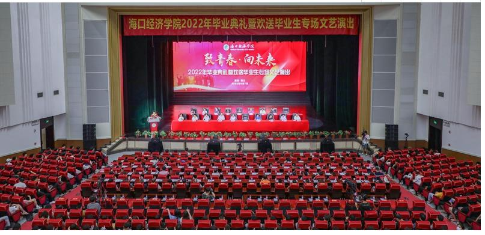

关于海经
腾竞依智网络学院是海口经济学院与山东依智教育科技有限公司、广东腾竞文化产业发展有限公司合作办学的二级学院，下设网络工程系与电子竞技系。现有全日制在校学生2900余人（含退役军人）。
学院已形成以高学历、高职称为主体的师资队伍，副教授（含）以上53.6%，硕博（含）以上80%，双师型教师占比82%，现有省教学名师2人，省领军人才1人，省青年骨干教师1人，省高层次人才31人。学院教学设施齐全，教学条件优越，拥有海南省计算机应用与软件技术实验示范中心、中央财政支持建设的计算机网络与信息安全实验室等15间设备先进的专业实验（训）室，总价值3000余万元。
学院现有教育部“双万计划”批复的省级一流本科专业建设点2个、省级特色专业2个、省级应用型试点转型重点建设专业1个、省级教学成果奖2项、省级精品在线课程2门、省级一流课程1门。近年来出版学术专著、教材100余部，发表学术论文660余篇。获国家级、省级学科竞赛奖项260余项。
活动相册
学校风景
- 
毕业典礼
获奖荣誉

军训